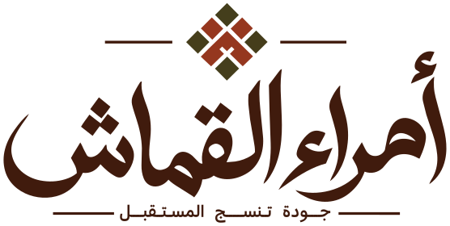

كل فكرة شغالة بالحركة الحقيقية جوه إطار بحجم الشاشة، وبتكشف في الآخر الـ Hero بتاع السايت. اختاري فكرة من فوق، وتقدري تعيديها بزرار «إعادة».

الكلام المستخدم: مفيش أي نص متألف — اللوجو، والشعار «جودة تنسج المستقبل»، والاسم OMRAA AL QOMASH، والعنوان والسطر اللي في الـ Hero كلهم من الكونتنت والهوية. الألوان من دليل الهوية (عاجي، إسبريسو، زيتي، طوبي، بيج). الصور من الصور اللي بعتها الكلاينت.